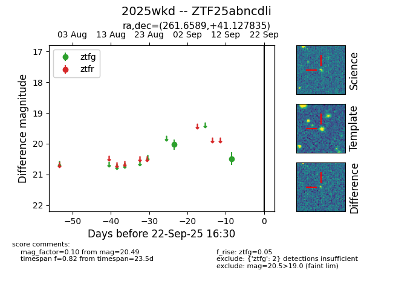

FINK: ZTF25abncdli
Lasair: ZTF25abncdli
ALeRCE: ZTF25abncdli
TNS: 2025wkd
YSE: 2025wkd
ZTF25abncdli (ztf,fink)
2025wkd (tns,yse)
equatorial (ra, dec) = (261.6589,+41.12783)
galactic (l, b) = (66.2246,+32.84382)

last ztfg=20.49
2 ztfg detections